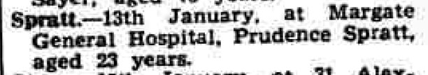
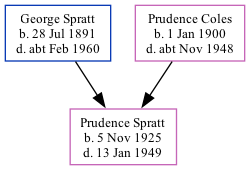

Prudence M Spratt 1925 - 1949 [ Home ] | [ Calendar ] | [ Surnames Index ] | [ Family History ]The daughter of George Spratt (a road sweeper) and Prudence Coles Prudence Spratt , the first cousin once-removed on the father's side of Nigel Horne , was born in Thanet, Kent, England on 5 Nov 19251,2,3,4 . On 29 Sept 1939, she lived on 4 St John's Road, Margate, Kent, England1 .
She died on 13 Jan 1949 at Margate General Hospital in Margate4,5 .
Parents George Dale was born on 28 Jul 1891Prudence L was born on 1 Jan 1900Citations 1939 Register - Findmypast (was the daughter of the head of the household) England & Wales births 1837-2006 - Findmypast England & Wales, Birth Index: 1916-2005 Online publication - Provo, UT, USA: The Generations Network, Inc., 2008.Original data - General Register Office. England and Wales Civil Registration Indexes. London, England: General Register Office. © Crown copyright. Published by permission of the Cont England & Wales, Death Index: 1984-2005 Online publication - Provo, UT, USA: The Generations Network, Inc., 2007.Original data - General Register Office. England and Wales Civil Registration Indexes. London, England: General Register Office. © Crown copyright. Published by permission of the Cont England & Wales deaths 1837-2007 - Findmypast Media Thanet Advertiser - 28 Jan 1949  1939 Register - TNA/R39/1755/1755D/014/27 England & Wales deaths 1837-2007 - BMD/D/1949/1/AZ/001128/103 England & Wales births 1837-2006 - BMD/B/1925/4/AZ/001160/027 Family Tree Map
Generated by ged2site . Last updated on Feb 19, 2025